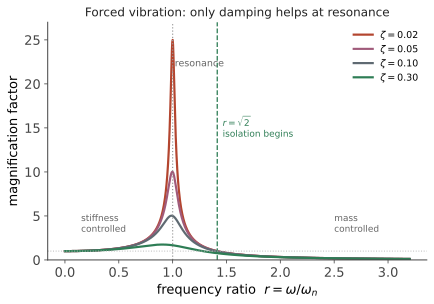

动力 II · 单自由度振动
层次：本科核心 ｜ 机械现场问题的第一来源。 一个质量、一个弹簧、一个阻尼器——最简单的振动模型，却包含了共振、隔振、减振的全部核心思想。机械工程师遇到的"抖动、噪声、断裂"问题，多数可以先用这个模型定性判断。 本页也与 🔗 自动化站第三页（二阶系统响应）是同一套数学的两种工程语言。
一、自由振动
定义固有频率与阻尼比：
\(\omega_n\) 只由刚度与质量决定——这是机械设计中最重要的一个量：要改变固有频率，只能改刚度或质量（加筋、减重、改支撑），改阻尼没用。
典型机械结构的阻尼比很小：金属结构 \(\zeta \approx 0.001\)–\(0.01\)，螺栓连接结构 \(0.01\)–\(0.05\)，橡胶阻尼件可达 \(0.1\) 以上。这意味着机械系统本质上是"欠阻尼"的，一旦被激起就会振很久——这是与很多控制系统的重要区别。
实用的阻尼测量法——对数衰减率：
敲一下、测衰减，就能估出阻尼比。这是现场最快的诊断手段之一。
二、受迫振动与共振
简谐激励 \(F_0\sin\omega t\) 下的稳态响应幅值：

共振时的放大倍数 \(Q \approx 1/(2\zeta)\)。对 \(\zeta=0.01\) 的结构，放大 50 倍——这就是为什么共振能轻易毁掉机器。
三个频段的不同对策（这是本页最实用的结论）：
| 频段 | 控制因素 | 有效对策 |
|---|---|---|
| \(r \ll 1\) | 刚度 | 加刚度（但会推高 \(\omega_n\)） |
| \(r \approx 1\) | 阻尼 | 只有加阻尼有效——加刚度或加质量只是把共振点挪走 |
| \(r \gg 1\) | 质量 | 加质量 |
"共振时只有阻尼管用" 是一条必须记住的判据。很多现场"加固反而更抖"的案例，正是因为加刚度把固有频率推到了激励频率上。
三、隔振：把振动挡在外面
传递率（传到基础的力 / 激振力）：
核心结论：只有 \(r > \sqrt{2}\) 时 \(TR<1\)，才真正起到隔振作用。
这意味着隔振器必须"软"——要让 \(\omega_n\) 远低于激励频率。
实用估算（工程上极常用）：隔振器的固有频率与静挠度的关系
所以要隔离 50 Hz 的振动（需 \(f_n < 35\) Hz），静挠度至少约 2 mm；要隔离 10 Hz，静挠度需约 25 mm。低频隔振极其困难，这就是为什么精密仪器的隔振台又大又软（气浮隔振台的固有频率可低至 1 Hz 以下）。
一个必须注意的矛盾：
- 稳态隔振希望阻尼小（\(r>\sqrt2\) 时，阻尼大反而使传递率升高——看上面公式的分子）；
- 但过共振时需要阻尼（启停机过程要扫过共振点）。 工程折中是取中等阻尼（\(\zeta \approx 0.05\)–\(0.15\)），或使用变阻尼装置。
四、动力吸振器
一个精妙的装置：给主系统附加一个小的质量-弹簧系统，调谐到激励频率，可使主系统在该频率上的振动降为零。
原理：吸振器以恰好反相的方式运动，其弹簧力抵消激励力。代价：
- 只在窄带有效（激励频率变了就失效）；
- 原来的一个共振峰变成两个（分列于原频率两侧）——若激励频率漂移，可能落到新峰上而更糟。
应用：高层建筑的调谐质量阻尼器（TMD）、机床防颤振、发动机曲轴的扭振减振器、输电线的防舞动锤。它是"用一个精心设计的次系统吸走能量"的典范。
五、几种常见的激励源
工程中的振动来源，按频率特征识别（这是现场诊断的核心技能）：
| 特征频率 | 可能来源 |
|---|---|
| 1× 转速 | 不平衡（最常见） |
| 2× 转速 | 不对中、松动 |
| 叶片数 × 转速 | 叶片通过频率（风机、泵） |
| 齿数 × 转速 | 齿轮啮合频率（第十一页） |
| 特定非整数倍 | 轴承故障特征频率（第十二页） |
| 与转速无关的固定频率 | 结构共振或外部激励 |
振动频谱分析因此成为设备状态监测的主要手段——看频谱就能定位故障源，这是预测性维护的技术基础（🔗 自动化站第二十二页）。
六、自激振动：一类不同的危险
上面都是外部激励引起的受迫振动。还有一类自激振动：系统自己从恒定的能量源中汲取能量，维持振动。
- 切削颤振（第十八页）：切削力与振动耦合，形成正反馈；
- 摩擦引起的爬行/啸叫（刹车尖叫、导轨爬行）；
- 流体诱发振动（涡激振动、颤振）。
自激振动的特点：频率接近系统固有频率，但激励来自系统自身；加大切削量或速度到某个阈值就突然发生（本质是稳定性问题，🔗 自动化站第四页的失稳）。对策与受迫振动不同——不是躲开激励频率，而是改变系统的稳定性边界（改变刚度、加阻尼、改变切削参数、使用变螺旋角刀具）。
七、要点
- \(\omega_n=\sqrt{k/m}\) 只由刚度与质量决定；机械结构阻尼极小（\(\zeta\sim0.01\)），共振放大可达数十倍；
- 三个频段三种对策——共振区只有阻尼有效；
- 隔振要求 \(r>\sqrt2\)，即隔振器必须"软"；低频隔振极难（\(f_n \approx 5/\sqrt{\delta_{st}}\)）；
- 动力吸振器窄带有效，且会产生两个新峰；
- 按特征频率识别振源是现场诊断的核心技能；
- 自激振动来自系统内部的正反馈，对策是改变稳定性而非躲开频率。
下一页：真实结构有无穷多个自由度。多自由度振动引入模态的概念——它把复杂的耦合振动分解成一组独立的简单振动，是振动分析的核心工具。